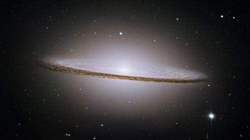
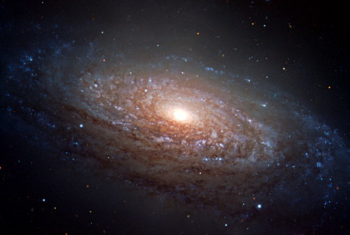
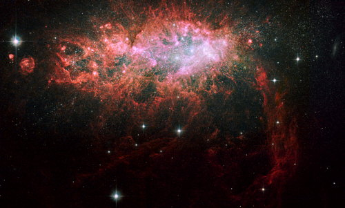
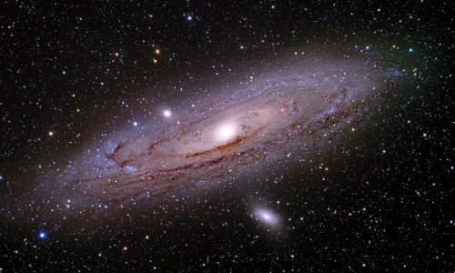
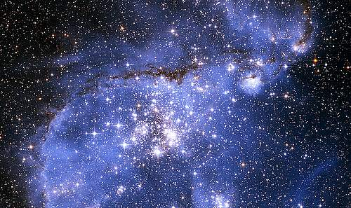

indice
- Las galaxias del Universo
- Tipos de galaxias
- Galaxias cercanas
- La Via Láctea
- Galaxias elípticas
- Galaxias espirales
- Galaxias irregulares
- Andromeda
- Pequeña y Gran Nube de Magallanes
- Triángulo
Las galaxias del Universo
Las galaxias del Universo son acumulaciones enormes de estrellas, gases y polvo. En el Universo hay centenares de miles de millones de galaxias. Cada una puede estar formada por centenares de miles de millones de estrellas, nebulosas, agujeros negros y otros astros. En el centro de las galaxias es donde se concentran más estrellas. Todos los cuerpos que forman parte de una galaxia se mueven a causa de la atracción entre ellos debida al efecto de la gravedad, lo que Newton definió como gravitación universal. En general hay, además, un movimiento mucho más amplio que hace que todo junto gire alrededor del centro.
Tipos de galaxias
Cuando se utilizan telescopios potentes, en la mayor parte de las galaxias sólo se detecta la luz mezclada de todas las estrellas; sin embargo, las más cercanas muestran estrellas individuales. Las galaxias presentan una gran variedad de formas. En 1930 Edwin Hubble clasificó las galaxias en elípticas, espirales e irregulares. Las dos primeras clases son más frecuentes.
Galaxias elípticas
Algunas galaxias tienen un perfil globular completo con un núcleo brillante. Estas galaxias, llamadas elípticas, contienen una gran población de estrellas viejas, normalmente poco gas y polvo, y algunas estrellas de nueva formación. Las galaxias elípticas tienen gran variedad de tamaños, desde gigantes a enanas. En la foto, la elíptica Galaxia del Sombrero, M104. Hubble simbolizó las galaxias elípticas con la letra E y las subdividió en ocho clases, desde la E0, prácticamente esféricas, hasta la E7, husiformes. En las galaxias elípticas la concentración de estrellas va disminuyendo desde el núcleo, que es pequeño y muy brillante, hacia sus bordes.
Galaxias espirales
Las galaxias espirales son discos achatados que contienen no sólo algunas estrellas viejas sino también una gran población de estrellas jóvenes, bastante gas y polvo, y nubes moleculares que son el lugar de nacimiento de las estrellas. Generalmente, un halo de débiles estrellas viejas rodea el disco, y suele existir una protuberancia nuclear más pequeña que emite dos chorros de materia energética en direcciones opuestas. Las galaxias espirales se designan con la letra S (spiral). Dependiendo del menor o mayor desarrollo que posea cada brazo, se le asigna una letra a, b ó c (Sa, Sb, Sc, SBa, SBb, SBc).
Galaxias irregulares
Las galaxias irregulares se simbolizan con la letra I ó IR, aunque suelen ser enanas o poco comunes. Se engloban en este grupo aquellas galaxias que no tienen estructura y simetría bien definidas. Se clasifican en irregulares de tipo 1 o magallánico, que contienen gran cantidad de estrellas jóvenes y materia interestelar, y galaxias irregulares de tipo 2, menos frecuentes y cuyo contenido es difícil de identificar. Las galaxias irregulares se sitúan generalmente próximas a galaxias más grandes, y suelen contener grandes cantidades de estrellas jóvenes, gas y polvo cósmico.
Galaxias cercanas
Las galaxias más cercanas a la Vía Láctea, nuestras vecinas, son las que pertenecen al llamado Grupo Local. Se ven fácilmente con un telescopio de aficionado. Algunas, como Andrómeda y las Nubes de Magallanes, pueden observarse incluso a simple vista. Alrededor de la Via Láctea orbitan algunas galaxias enanas. En 1.994 se descubrió la Galaxia Enana Elíptica de Sagitario o SagDEG (Sagittarius Dwarf Elliptical Galaxy en inglés) a 70.000 años luz de distancia, y en 2.003 la Galaxia de Can Mayor a 25.000 años luz. Son las dos más cercanas descubiertas hasta el momento.
Andromeda
A 2,5 millones de años luz de la Tierra. Es una espiral gigante, el doble de tamaño que la Vía Láctea. Es la galaxia más grande del Grupo Local. Contiene cientos de miles de millones de estrellas y gran cantidad de nebulosas. En su centro hay un agujero negro supermasivo. Es muy brillante y es el objeto más lejano que puede verse a simple vista. Se calcula que dentro de unos 6.000 millones de años, la Vía Láctea y Andrómeda chocarán.
Pequeña y Gran Nube de Magallanes
Son dos galaxias satélites de la Vía Láctea. Esto significa que la Vía Láctea las atrae con su gravedad, y en el futuro formarán parte de ella. Se llaman así porque Magallanes fue el primer explorador europeo que las observó, en el siglo XVI. La Gran Nube está a 170.000 años luz de distancia, y la Pequeña Nube a 210.000 años luz. Son galaxias enanas e irregulares, con muchas nebulosas y estrellas jóvenes. En el hemisferio sur se ven a simple vista, como dos nubes blancas aisladas de la Vía Láctea que cruza el cielo.
Triángulo

Es la tercera galaxia más grande del Grupo Local, por detrás de Andrómeda y la Vía Láctea. Está a 3 millones de años luz. Sólo se ve con telescopio. Tiene forma espiral, parecida a nuestra galaxia. Se cree que Andrómeda la atrae con su gravedad, e incluso podría orbitar alrededor de ella. En la galaxia de Triángulo está la nebulosa de emisión más grande que se conoce: la NGC 604.
La Via Láctea

La galaxia de la Vía Láctea es la que contiene el Sistema Solar y, por lo tanto, la Tierra. Forma parte del Grupo Local. En noches serenas podemos ver una franja blanca que atraviesa el cielo de lado a lado, con muchas estrellas. Son sólo una pequeña parte de nuestros vecinos. Entre todos formamos la Vía Láctea, nuestra galaxia. Los romanos la llamaron "Camino de Leche", que es lo que significa via lactea en latín.